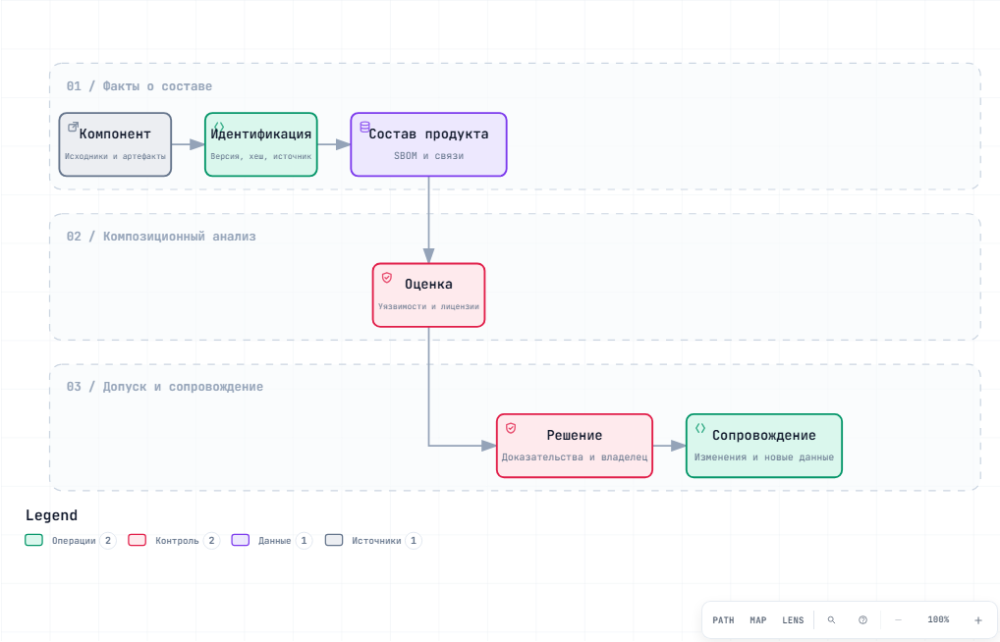
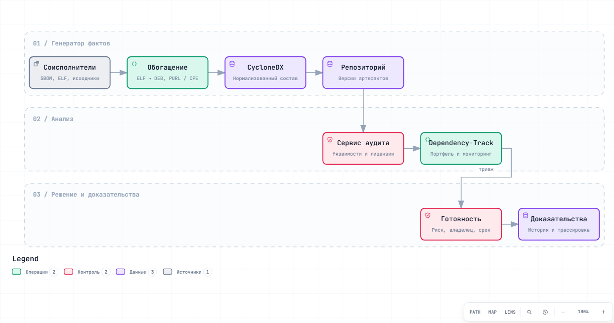
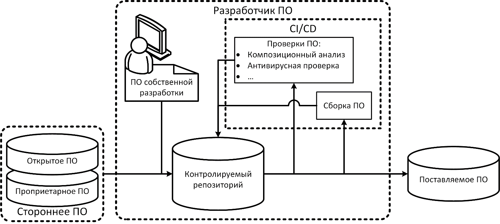
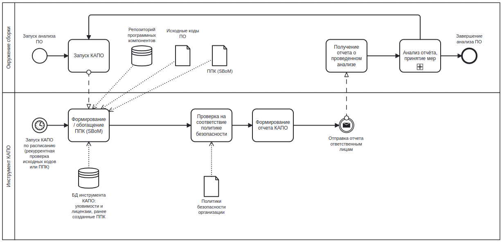
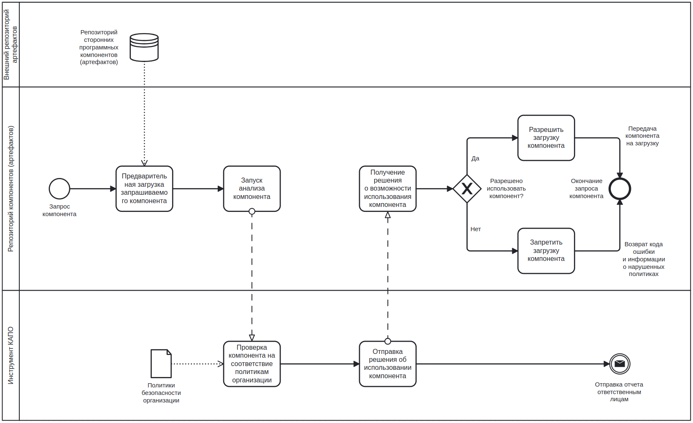
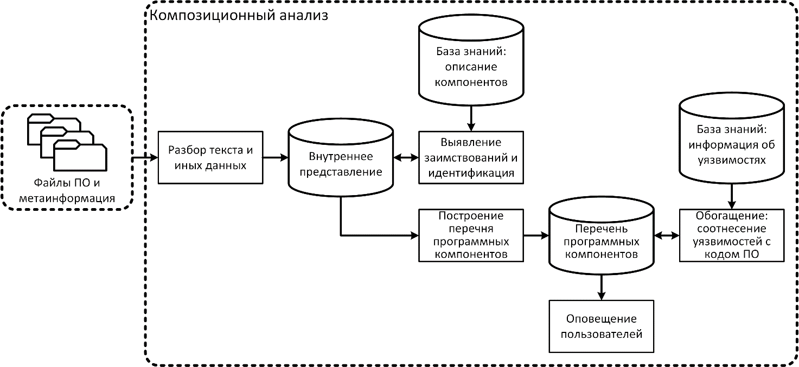

Понять состав продукта
Термины, идентификация, форматы SBOM и первые проверки. Затем — практика с проверяемым результатом.
Начать с М00 →Композиционный анализ программного обеспечения: от сторонней библиотеки до управляемой цепочки поставки, проверяемого ППК и решения по риску.
Пиков Виталий Александрович
Термины, идентификация, форматы SBOM и первые проверки. Затем — практика с проверяемым результатом.
Начать с М00 →Сборочные данные, прямые и транзитивные зависимости, C/C++ legacy, контроль компонентов от соисполнителей.
Разобрать архитектурный кейс →Планы занятий, контрольные вопросы, регламенты, критерии приёмки и шаблоны доказательной базы.
Открыть шаблоны →Масштабируйте карту, ищите узлы и выделяйте связи. Схемы открываются в отдельной вкладке.

Идентификация → состав → оценка → решение → сопровождение. Авторская схема для первого знакомства с процессом.

Модель из модуля М11: генератор фактов, репозиторий артефактов, сервис аудита и сопровождение продукта.
Подписи — на русском; встроенные элементы интерфейса Archify — на английском. Эти две карты являются авторским объяснением, оригинальные рисунки проекта приведены ниже.
«Защита информации. Разработка безопасного программного обеспечения. Композиционный анализ программного обеспечения. Общие требования».
Разделы 4–5 описывают организацию анализа и контролируемый репозиторий; раздел 7 — возможности инструмента; раздел 8 и приложения — перечень программных компонентов и его формат. Курс связывает эти темы с процессами 5.16–5.17 ГОСТ Р 56939-2024.




Шесть полей ниже воспроизведены из указанного DOCX. Это не исчерпывающий перечень всех положений раздела 8 и приложений.
| Обозначение поля | Описание поля |
|---|---|
| Автор компонента | Наименование организации, группы лиц или отдельных лиц, позволяющее идентифицировать автора компонента |
| Наименование компонента | Название компонента |
| Версия компонента | Версия компонента |
| Идентификатор компонента | Идентификатор компонента, позволяющий точно идентифицировать компонент в базах уязвимостей. В качестве идентификатора может применяться PURL или иной |
| Автор ППК | Идентификатор, позволяющий определить организацию, роль или конкретного исполнителя в соответствии с регламентом организации отвечающего за формирование ППК |
| Дата и время формирования ППК | Дата и время формирования перечня программных компонентов |
В проекте ППК — машиночитаемый документ о составе. ППК сопоставим по назначению с SBOM, но не является универсальным синонимом любого SBOM: поля и правила представления проверяются по конкретному проекту стандарта и выбранному формату. Реестр ППК по версиям и организационные процедуры его сопровождения — отдельный уровень управления. Конкретные «должен» и «рекомендуется» проверяйте по тексту проекта.
Перейти к материалам ГОСТ Р 56939-2024 ↗В каждом модуле: карта, конспект, план занятия, практика, контрольные вопросы и чек-лист проекта.
40 работ с заданиями, артефактами и критериями проверки. Начинайте с учебной копии проекта и сохраняйте версии входных данных.
Начните с инвентаризации: состав, идентификаторы и привязка к конкретной сборке.
Проверьте, что вошло из архивов .a и vendored-кода; сохраните данные компоновки.
Соедините состав, уязвимости, лицензии, решение по риску и доказательную базу.
На выходе важен воспроизводимый набор: версия продукта → состав → находки → анализ применимости → решение → доказательства. Лицензионный вывод зависит от способа использования и распространения компонента; одного идентификатора лицензии недостаточно.
Динамические библиотеки, статическая линковка, vendored-код и внутренние форки требуют разных источников доказательств.
Сопоставьте записи ELF и установленные пакеты, сохранив версию и происхождение. Неопознанные библиотеки отмечайте явно.
Сохраните команды линкера, map-файлы и происхождение архивов. Отсутствие записи DT_NEEDED не доказывает отсутствие компонента.
Учитывайте каталоги third_party, локальные изменения и commit upstream. Версия исходной библиотеки не описывает все внесённые патчи.
693 файла: 691 заметка, инструкция и карта архитектуры в формате Obsidian Canvas. Markdown, практики и шаблоны; без служебных папок и рабочих документов.
Скачать курс · ZIPПредоставленные PDF и DOCX проекта первой редакции. Оригинальные рисунки можно открыть и сохранить по отдельности выше.
PDF проекта · DOCX проектаКонтрольные суммы скачиваемых файлов. Версия библиотеки подготовлена из авторских материалов; ссылки и версии внешних инструментов могут изменяться.